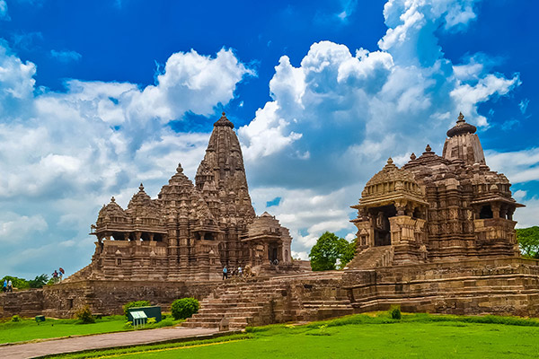
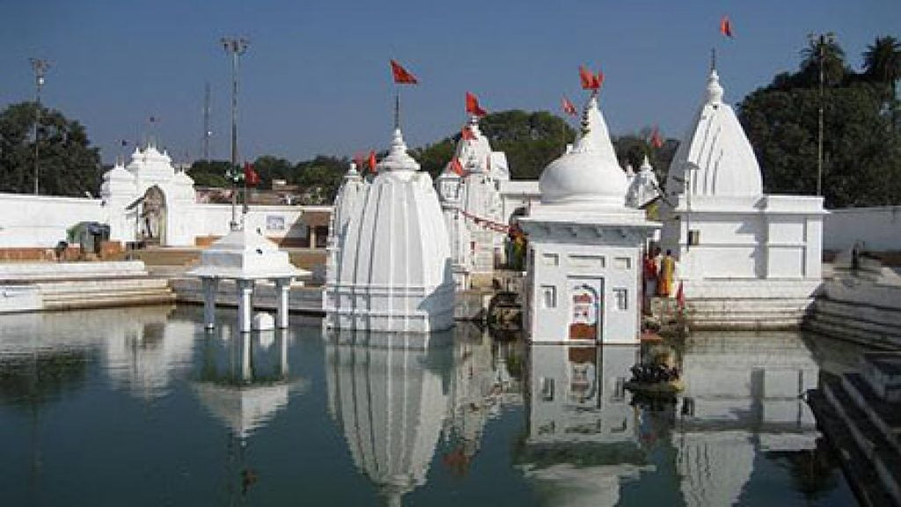
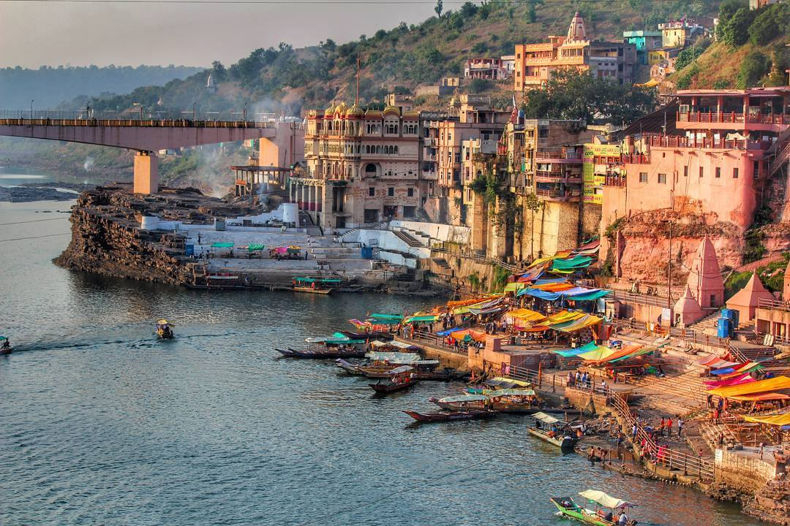
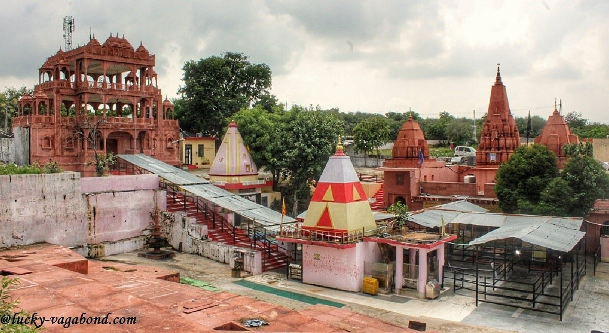

Temples and pilgrimages in Madhya Pradesh
Mahakaleshwar Temple Ujjain

The Mahakaleshwar Temple in Ujjain, Madhya Pradesh, is one of India's twelve sacred Jyotirlingas, situated on the Kshipra River. Dedicated to Lord Shiva, it is famous for the unique early morning Bhasma Aarti and its five-level structure, including an underground sanctum. It is regarded as a powerful center for Moksha, attracting pilgrims for the Swayambhu (self-manifested) Lingam.
- Key Tourist Information:
- Darshan Times: The temple is generally open for daily darshan from early morning until late evening, typically starting around 4:00 AM.
- Bhasma Aarti: Held daily at 4:00 AM, this famous ritual requires advanced booking through the official website shrimahakaleshwar.mp.gov.in
- Sheeghra Darshan: Special passes are available online or at the temple counter for faster, shorter queues.
- How to Reach: Ujjain is well-connected by rail and road, with the nearest airport in Indore, approximately 55 km away.
- Other Nearby Places: The temple complex includes the scenic Mahakal Corridor, and visitors often visit Kal Bhairav Temple, Harsiddhi Temple, and Sandipani Ashram.
Khajuraho Temple

The Khajuraho Group of Monuments in Madhya Pradesh is a UNESCO World Heritage Site famous for its 10th-12th century Chandela-era Hindu and Jain temples. Known for Nagara-style architecture and intricate, erotic, and spiritual carvings, the site boasts the massive Kandariya Mahadeva temple.
- Key Attractions & Visitor Info
- Western Group (Most Popular): Includes the massive Kandariya Mahadev Temple, Lakshmana Temple, and Matangeshwara Temple.
- Eastern/Southern Groups: Includes the Jain Museum, Parsvanath Temple, and Duladeo Temple.
- Best Time to Visit: October to March for comfortable weather. April to June is extremely hot.
- Timing & Entry: Open sunrise to sunset. Entry is ticketed (foreigners pay more; Indians/SAARC/BIMSTEC citizens pay ~Rs. 60-70, while other foreign visitors pay ~Rs. 600, with higher rates for non-citizens).
- Other Activities: Panna National Park and Tiger Reserve jeep safari, Raneh Falls canyon, and the State Museum of Tribal and Folk Art.
- Access: Khajuraho has its own airport (HJR) and railway station, connecting it to major Indian cities.
- Click here for more information.
Amarkantak Temple

Amarkantak Temple in Madhya Pradesh is a sacred pilgrimage site located in the Anuppur district, known as the "Teerthraj" (King of Pilgrimages) and the holy birthplace of the Narmada River. Situated at the confluence of the Vindhya, Satpura, and Maikal ranges, it features the central Narmada Kund temple surrounded by ancient shrines.
- Travel Tips & Logistics
- Best Time to Visit: Throughout the year, but best during October to March, particularly for sunrises and sunsets.
- Nearest Airport: Jabalpur (approx. 250 km).
- Nearest Railway Station: Pendra Road (17 km) or Anuppur (48 km).
- Click here for more information.
Omkareshwar

Omkareshwar is a sacred town in Madhya Pradesh situated on Mandhata Island in the Narmada River, renowned for its ॐ-shaped topography and one of the 12 Jyotirlinga shrines of Lord Shiva. It is a major pilgrimage center, featuring the main Omkareshwar Temple, Mamleshwar Temple, and the serene Narmada ghats, best visited from October to March.
- Omkareshwar Tourist Information:
- Major attractions: Omkareshwar Jyotirlinga Temple, Mamleshwar Jyotirlinga Temple, Narmada-Kaveri confluence (Sangam Ghat), Siddhanath Temple, Gauri Somnath Temple, Adi Guru Shankaracharya Cave.
- Activities: Boat ride in Narmada River, Aarti at the ghats, and temple visits.
- Time: 1-2 days are sufficient for visiting the temple.
- Best time: October to March.
- Nearest airport: Indore (about 77-82 km away).
- Nearest railway station: Omkareshwar Road (12 km) or Barwaha (17 km).
- Click here for more information.
Shri Shanichara Temple

The Shri Shanichara Temple in Aiti village, Morena district, Madhya Pradesh, is a renowned ancient shrine dedicated to Lord Shani Dev, situated roughly 23 km from Gwalior. It is widely believed that the idol fell here from the sky, and devotees visit to alleviate Shani's malefic effects, often offering hair and old clothes, especially on Saturdays.
- Key Tourist Information:
- Location: Aiti Village, Morena District, Madhya Pradesh.
- Significance: Considered one of the oldest and most important Shani temples, often visited to appease Lord Shani for prosperity.
- Best Time to Visit: Saturdays are highly popular, specifically the special fair on "Shanichari Amavasya".
- Rituals: Devotees commonly offer iron items, mustard oil, and cast off old clothes to shed negative energy.
- Facilities: The area is developing with amenities like a, Dharamsala, bathing pool, and improved parking.
- Accessibility: Accessible via road; it is easily reachable from both Gwalior and Morena.
- Click here for more information